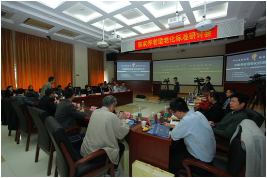
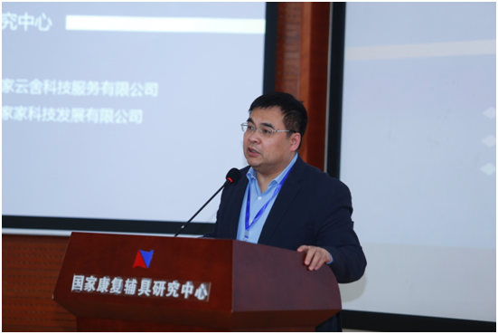

“研究适老标准，服务居家养老”研讨会在京举行
2017-04-14 10:45:52 来源: 综合 作者:
4月12日，“研究适老标准，服务居家养老”研讨会在民政部国家康复辅具研究中心举行。
研讨会由北京慧家家科技发展有限公司、中国康复辅助器具协会、中国科学院计算技术研究所、达福康辅助器具技术有限公司、北京居家云舍科技服务有限公司等单位共同主办。来自民政部国家康复辅具研究中心、中国计量院、中国科学院、清华大学、北京大学、北京市质量技术监督局等专家学者参与此次研讨。

“研究适老标准，服务居家养老”研讨会在京举行
“老龄化进程已全面启动，速度不断加快，人口老龄化问题日益严峻。”清华大学社会科学学院副教授王宣喻指出，到2030年，养老产业市场将达到13万亿的水平，到2050年，中国老人将占全球老人的25%。
日前，国务院出台了《“十三五”国家老龄事业发展和养老体系建设规划》，坚持把应对人口老龄化与促进经济社会发展相结合，及时应对、科学应对、综合应对人口老龄化，健全和完善养老服务体系，大力发展居家社区养老服务，加强居家养老宜居环境建设，提高老年人生活生命质量。
2015年，国家还相继出台了《国务院关于印发深化标准化工作改革方案的通知》、《国务院办公厅关于印发国家标准化体系建设发展规划(2016-2020年)的通知》等重要纲领性文件，全面推进了我国的标准化改革工作。
中国康复辅助器具协会张晓玉会长在报告中强调，居家老年康复辅助器具配置标准应当首先在调查基础上进行数据分析，对居家养老的康复辅助器具的需求现状存在的问题进行研究分析，并尽快制定标准的草案结构框架。
“我们面临非常复杂的但是很艰巨的养老的任务。”国家康复辅具研究中心樊瑜波主任认为，有效应对这一局面不仅需要适宜的技术、产品、服务，更需要适宜的体系、平台和模式。

国家康复辅具研究中心樊瑜波主任在研讨会上致辞
据介绍，致力于为老服务领域的北京慧家家科技发展有限公司曾率先开展居家养老适老化标准研究工作，在此期间，慧家家用了三年多的时间进行相关领域的研究与实践，目前已完成了产业平台搭建、资源积累等基础工作，形成了一系列基础的居家适老化装修设计、家具设计、家居用品、康复辅具以及智能化产品的初步标准体系，并根据初步标准来配置产业资源。
慧家家首席服务官毕亚琼认为，产业互联网平台基于对用户的精准认识，以用户的需求为核心出发点，围绕用户整合全方位的产业资源，支撑全新的服务体系。此时，就需要以用户需求为核心出发点，有效聚合、梳理同源性产业资源的标准体系，让其能够引导和指导产业链、服务链中的各方参与主体为老年人提供体系化、标准化的服务。
不仅如此，基于互联网+和大数据，产业链、服务链中的用户端、生产端、商品化端、流通端以及用户服务和反馈端，整个链条中的资源和环节都可以在平台上进行嫁接和控制，平台对各个环节拥有较高的监管权力，从而使得标准的可执行力大大提升。
记者注意到，在居家养老标准化实践上，慧家家旗下子公司“居家云舍”已经依照居家养老智能化标准，根据用户需求整合了为老科技领域优质的产业资源，统筹制定产品形态、检测计量、数据接口等，实现适老化标准落地。